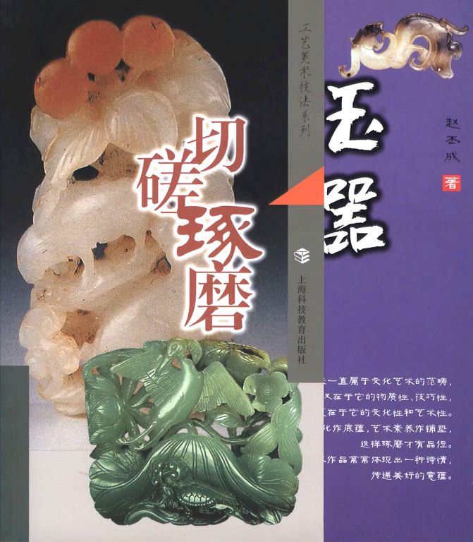
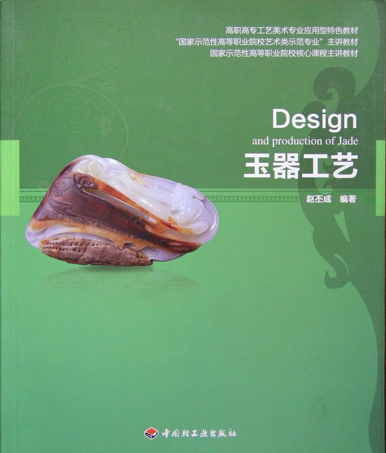
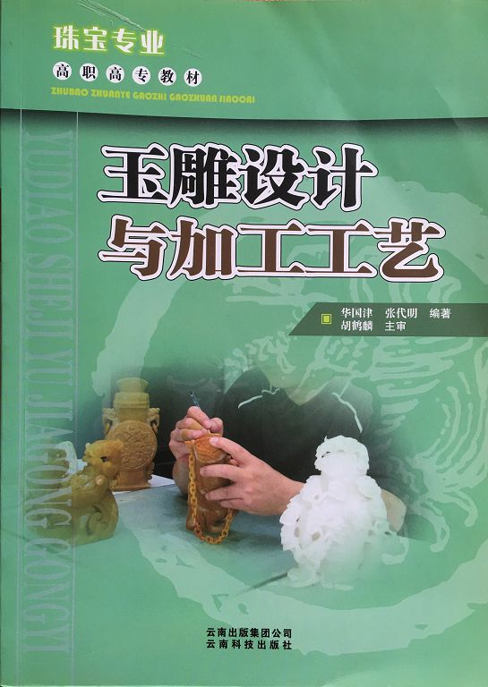

《玉器工艺》是一门以制作实践带动基础知识，以设计创作提高艺术修养的职业实训课程，学员通过本课程循序渐进的玉器琢磨学习，能够掌握玉器的制作技能和设计知识，达到一定的职业能力要求，并且通过掌握的琢磨技巧和艺术修养来传承、发展、创新我国的玉文化。 本教材共有九章，第二章至第七章，每一个章节都有具体的玉器项目实训任务，由浅至深的进行玉器工艺过程。第一章和第八、九章，主要是说玉和赏玉，有玉文化的讲述，有优秀玉器作品的赏析，以及美学在玉器设计中的运用，其三章虽然没有具体的玉器实训项目，但是它和实训课程的章节有着内在的联系，同时使学员们深深懂得：玉器的创作灵感来自于玉质美感和民族文化的启迪；玉器的形式美感孕育于作者的艺术底蕴和砣轮下随机的把握；玉器的工艺美感依赖于娴熟、精湛的技巧和恰如其分的表达，让琢玉之美在自然和工巧之间流出。 目 录 第一章 玉意吉祥话琢磨——说 玉 一、多彩的玉石 二、特种的工艺 三、琢玉的文化 实践项目：1. 对不同玉石的品质、性能、色泽进行认识、鉴别。 2．对玉器的特种加工工艺进行入门实践教学。 3．了解我国历代玉器的器形特点和文化内涵。 第二章 方寸耕耘天地宽——玉佩工艺 一、玉佩的图案和寓意 二、玉佩的意临 三、玉佩的工艺 实践项目：玉佩的意临和制作 第三章 形色润泽创意源——瑞兽玉器工艺 一、瑞兽玉器因料设计 二、瑞兽玉器造型要点 三、瑞兽玉器工艺要求 四、瑞兽玉器工艺过程 实践项目：瑞兽玉器设计与制作 第四章 化去腐朽显神奇——花鸟玉器工艺 一、花鸟玉器因料设计 二、花鸟玉器形式美感 三、花鸟玉器工艺要求 四、花鸟玉器工艺过程 实践项目：花鸟玉器设计和制作 第五章 佛仙玉女石间出——人物玉器工艺 一、人物玉器的因料设计 二、佛仙仕女的造型特点 三、玉人造型的审美要求 四、形式美的造型规律 五、人物玉器的工艺过程 实践项目：人物玉器设计和制作 第六章 优雅玉瓶添玲珑——天然瓶玉器工艺 一、天然瓶的设计和造型 二、形态质感的琢磨表现 三、雕琢施艺的注意事项 实践项目：天然瓶设计和制作 第七章 端庄玉炉精气神——三足炉玉器工艺 一、三足炉的因料设计 二、三足炉的造型特点 三、三足炉的工艺流程 实践项目：三足炉设计和制作 第八章 天工玉意自然美——山子玉器赏析 一、自然的雕饰 二、多种的雕琢 三、观赏的韵味 第九章 琢玉之风随时代——大师名家玉作掠影 一、现代玉器的丰厚底蕴 二、现代玉器的个性风采 切磋琢磨-玉器 玉器工艺 玉雕设计与加工工艺
|
| 珠宝设计网站 中国珠宝设计网 国际珠宝网 傲宝网 BACCARAT |
雕塑设计网站 中国雕塑网 |
玉器图库 一些挂件 一些手把件 一些摆件 |
玉器设计与雕刻大赛 上海玉器雕刻神功奖 上海玉器雕刻玉龙奖 北京玉器雕刻天工奖 |
玉器设计与工艺发展动态 玉器设计与工艺过去 玉器设计与工艺现在 玉器设计与工艺未来 |